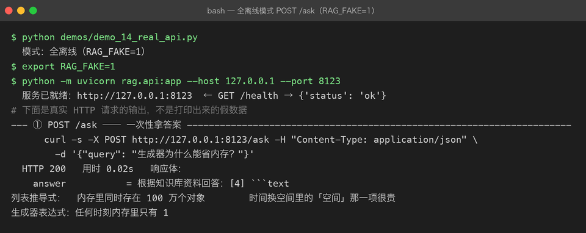
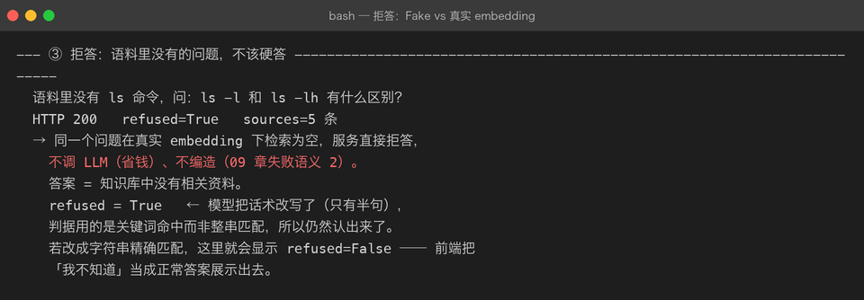
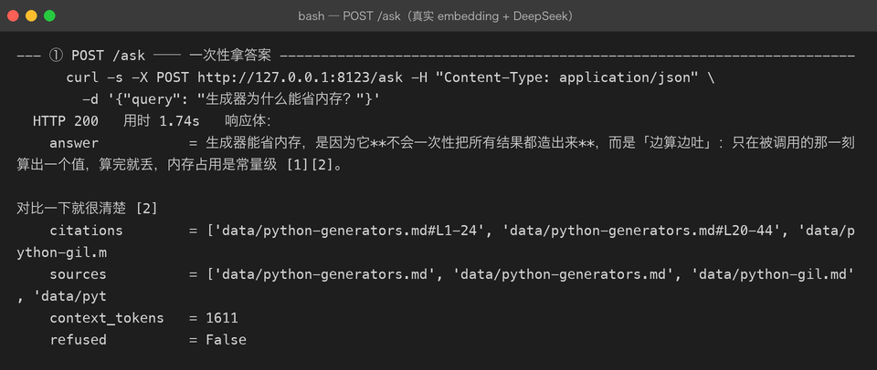
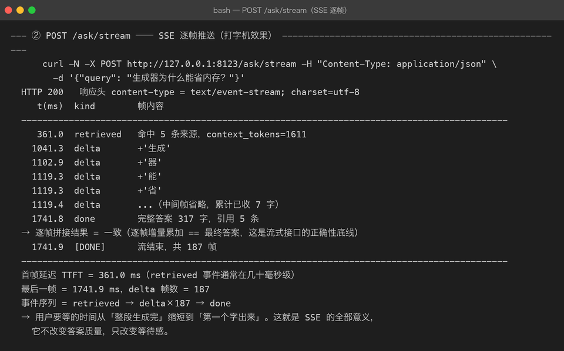

Milestone 13：给 RAG 加上 FastAPI Web API（复用 P03 的 SSE 模式）
到 12 章为止，RAG 链路还只能在命令行 / demo 里跑。真正的应用形态是一个可被前端调用的 Web 服务。这一章把 Pipeline 封装成 HTTP API，并重点解决「同步链路被硬塞进 async 框架」时会炸出来的那一整类问题。
1. 目标与接口契约
新增 src/rag/api.py，职责边界与 P03 的 assistant/api.py 完全一致：零业务逻辑。只做三件事：校验入参 → 调 RAGService → 包装响应。
对外暴露五个端点：
| 方法 | 路径 | 说明 |
|---|---|---|
| GET | /health | 存活探针 |
| GET | /stats | 当前索引规模、embedding 模型、top_k |
| POST | /ask | 一次性返回 JSON（answer + citations + sources + refused） |
| POST | /ask/stream | SSE 流式推送，前端打字机效果 |
| POST | /index | 重新建索引（内存向量库每次进程冷启动都为空） |
环境变量决定链路：
RAG_FAKE=1（默认）：全离线，FakeEmbeddingClient + FakeLLMClientRAG_FAKE=0：真实 embedding + 真实 DeepSeek LLM
2. 代码骨架
2.1 RAGService 加流式接口
一次性答案和流式答案必须共用同一段检索 + 组装逻辑。否则同一个问题，/ask 和 /ask/stream 会给出两份参考资料，前端会疯掉。
@dataclass(frozen=True)
class AnswerEvent:
kind: str # "retrieved" | "delta" | "done" | "error"
payload: dict = field(default_factory=dict)
class RAGService:
def _prepare(self, query, budget=None) -> _PreparedQuery:
# 检索、rerank、组装 prompt
def ask(self, query, budget=None) -> RAGAnswer:
# 失败语义 2（检索为空直接拒答） + 失败语义 3（LLM 失败重试一次）
def stream_answer(self, query, budget=None) -> Iterator[AnswerEvent]:
# 先 yield "retrieved"（前端可立刻展示「已找到资料」）
# 再逐 token yield "delta"
# 最后 yield "done"（完整答案 + 引用）2.2 LLM 层暴露 iter_tokens
class BaseLLMClient(ABC):
@abstractmethod
def chat(self, messages) -> str: ...
def iter_tokens(self, messages):
"""默认整段一次性返回；真实客户端 override 成逐 token yield。"""
yield self.chat(messages)OpenAICompatibleLLMClient.iter_tokens() 用 httpx.Client.stream() 边收边推；FakeLLMClient.iter_tokens() 按句切分，保证离线也能演示增量效果。
2.3 API 层
def create_app(index_paths=None) -> FastAPI:
app = FastAPI(lifespan=_make_lifespan(paths))
@app.post("/ask")
async def ask(req: AskRequest, service=Depends(get_service)):
answer = await asyncio.to_thread(service.ask, req.query, req.budget)
return AskResponse(...)
@app.post("/ask/stream")
async def ask_stream(req: AskRequest, service=Depends(get_service)):
async def gen():
async for event in _to_async(service.stream_answer(...)):
yield f"data: {json.dumps(event.as_dict())}\n\n"
return StreamingResponse(gen(), media_type="text/event-stream")SSE 信封沿用 P03 的格式：data: {json}\n\n，json 内用 kind 字段区分事件类型。
3. 真实踩坑清单
下面每一条都是跑真实 demo 时才炸出来的，不是读文档能脑补的。
坑 1：asyncio.run() 不能从已有事件循环里调用
真实 embedding 客户端内部是 async httpx，run_sync() 用 asyncio.run() 收口。CLI / demo / pytest 里没有 running loop，一切正常。但 uvicorn 的 lifespan 本身就跑在事件循环里，启动时直接调用 build_components() 会报：
RuntimeError: asyncio.run() cannot be called from a running event loop正确做法：把整段同步装配丢进线程池。
settings, embedding_client, store, retriever, service = await asyncio.to_thread(
build_components, profile="dev", fake=False,
index_paths=paths, quiet=True, llm=_build_llm(False)
)线程里没有 running loop，asyncio.run() 就合法了；同时建索引这种重 I/O 也不会堵住事件循环。
坑 2：request 参数没写 Request 注解
依赖函数写成：
def get_service(request) -> RAGService: ...FastAPI 把 request 当成一个必需的 query 参数，每个端点都开始要求 ?request=xxx。GET /stats 直接 422，报错是 Field required。
正确做法：
from fastapi import Request
def get_service(request: Request) -> RAGService: ...坑 3：同步 LLM / embedding 在 async 端点里会堵死事件循环
即使避开了 asyncio.run()，如果直接在 async def ask() 里 for token in service.stream_answer(...)，整个事件循环会被同步 HTTP 请求卡住，别的请求的 /health 都会超时。
正确做法：
/ask：整段service.ask()丢asyncio.to_thread/ask/stream：每个next()都丢线程池，让事件循环继续转
async def _to_async(sync_gen):
loop = asyncio.get_running_loop()
sentinel = object()
while True:
item = await loop.run_in_executor(None, lambda: next(sync_gen, sentinel))
if item is sentinel:
break
yield item代价是一次一个 token 一次线程切换；token 特别碎时（真实模型）可以改成「整段丢一个工作线程 + 队列」的版本。
坑 4：Fake 的流式必须发增量，不能发累积前缀
早期 FakeLLMClient.iter_tokens() 每句 yield 一次「从开头到当前句」的完整前缀。前端按「追加」消费，结果会把同一段话重复显示 N 遍。
正确做法：
pos = 0
for sent in _split_sentences(text):
yield text[pos:pos + len(sent)]
pos += len(sent)逐帧增量累加必须严格等于最终答案 —— 这是流式接口正确性的底线。
坑 5：Fake embedding 下「拒答」根本测不出来
FakeEmbeddingClient 是 char-ngram 哈希：任何查询都会和任何 chunk 算出一个非零相似度。于是 min_score=0.2 的闸门在离线模式下形同虚设，问一个语料里完全没有的问题也会召回 5 条。

这不是 bug，是离线替身的固有特性。它意味着：拒答能力只能用真实 embedding 来验证。
坑 6：真实模型会改写拒答话术
之前 RAGAnswer.refused 用精确字符串匹配：
return NO_RESULT_ANSWER in self.answer
# NO_RESULT_ANSWER = "知识库中没有相关资料，无法回答这个问题。"真实 DeepSeek 在拒答时回了一句：
知识库中没有相关资料。只有半句。结果 refused=False，前端把「我不知道」当成正常答案展示出去。
正确做法：关键词命中。
REFUSAL_MARKERS = ("无法回答", "知识库中没有相关资料", "没有相关资料",
"没有找到相关资料", "资料中没有")
def looks_refused(text: str) -> bool:
return any(marker in (text or "") for marker in REFUSAL_MARKERS)宁可放宽匹配，也不要漏判。

坑 7：流式路径一旦发了 delta，就无法回滚重试
同步路径的 ask() 遵循失败语义 3：LLM 失败 → 重试一次。但流式路径不同 —— 你已经把部分 delta 推给前端，再重试就会拿到两段拼起来的怪话。
所以 stream_answer() 只在一个字都没吐出去时重试；一旦开始流式，遇到错误只能发 error 事件。
buf = []
sent_any = False
try:
for tok in self._llm.iter_tokens(prepared.messages):
sent_any = True
yield AnswerEvent("delta", {"text": tok})
except Exception as e:
if sent_any:
yield AnswerEvent("error", {"message": ...})
return
# 还没发任何 delta，重试一次4. 真实运行截图
一次性接口 /ask

真实 embedding + DeepSeek，耗时约 1.7s，答案带 [n] 编号引用。
流式接口 /ask/stream

关键指标：
- 首帧延迟 TTFT ≈ 361 ms：用户在这个时间点已经看到第一个字。
- 最后一帧 ≈ 1741 ms：完整答案交付时间。
- 事件序列：
retrieved → delta×187 → done
如果没有 SSE，用户要瞪着空白屏等 1.7s；有了 SSE，361ms 后就有反馈。流式不改变答案质量，只改变等待感。
5. 自检清单
- [ ] 能解释为什么
/ask和/ask/stream必须共用_prepare() - [ ] 能说明
asyncio.run()在 uvicorn lifespan 里为什么会炸 - [ ] 能写出把同步生成器桥成 async 生成器的最小代码
- [ ] 知道 SSE 每帧增量累加必须等于最终答案
- [ ] 知道拒答判据为什么不能用精确字符串匹配
- [ ] 知道流式路径的失败重试和同步路径有何不同
上一章：12-real-llm-integration.md —— 真实 LLM 接入与忠实度审计
下一章：14-real-rag-evaluation.md —— 真实 RAG 评估：Hit Rate / MRR / 忠实度
回到项目主页：../README.md